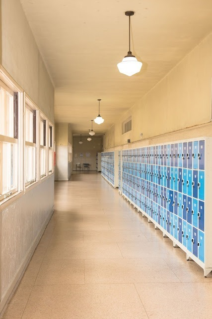

O Colégio Estadual do Paraná foi inaugurado em 2 de março de 1846, sendo uma das escolas mais antigas e prestigiadas do estado.
A ideia de fundar o colégio partiu do presidente da Província do Paraná, Zacarias de Góes e Vasconcelos, que buscava suprir a carência de escolas de ensino médio na região.
Inicialmente, o colégio funcionou em um prédio alugado no centro de Curitiba. Em 1868, o atual prédio, localizado no bairro São Francisco, foi construído para abrigar a instituição.
Ao longo dos anos, o Colégio Estadual do Paraná se tornou referência em educação, tendo formado diversas personalidades importantes da história do estado e do país, como o político e jurista Ruy Barbosa e o ex-governador do Paraná Paulo Pimentel.
Em 1970, o colégio foi transformado em escola de ensino médio e desde então, além de oferecer ensino de qualidade, também se destaca em projetos culturais e sociais, como o tradicional Festival de Teatro Estudantil.
Atualmente, o Colégio Estadual do Paraná é reconhecido como um patrimônio histórico-cultural do estado e continua sendo uma das referências em ensino médio no Paraná.
